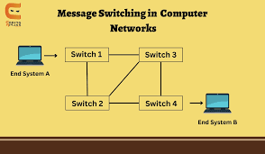
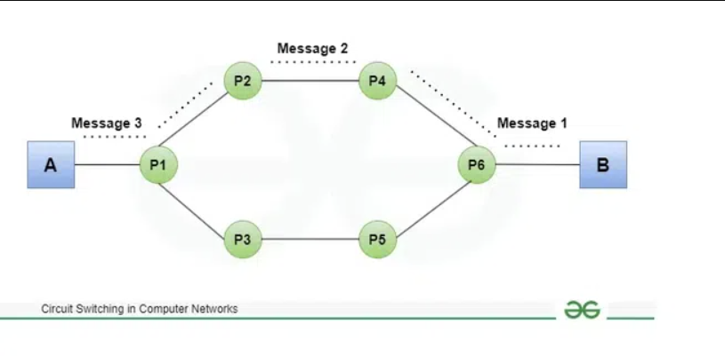
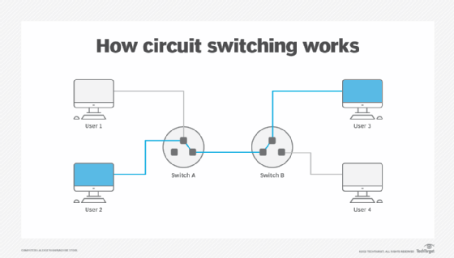

Switching Techniques
Message Switching
Definition: Message switching is a network switching technique where the entire message is forwarded from one switch to another, one hop at a time. The message is stored and forwarded until it reaches the destination.
Characteristics:
- Does not require a dedicated path.
- Messages are stored temporarily in each switch until the next link is available (store-and-forward).
- Suitable for applications where delay is acceptable.

Message Switching Diagram
Circuit Switching
Definition: Circuit switching establishes a dedicated communication path between the sender and receiver before any data is transmitted. The path remains reserved for the entire duration of the communication.
Phases:
- Circuit Establishment: A dedicated path is established before data transmission begins.
- Data Transfer: Data flows continuously without intermediate delays.
- Circuit Disconnection: The circuit is terminated after the communication session ends.

Circuit Switching Diagram

How Circuit Switching Works
Packet Switching
Definition: Packet switching divides data into packets that are transmitted independently over the network. Packets can take different paths and are reassembled at the destination.
Characteristics:
- No need for a dedicated path.
- Packets are routed based on the best available path at the time.
- Efficient for bursty data traffic.

Packet Switching Diagram 1